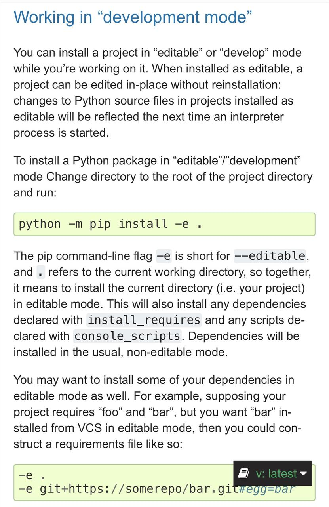

Python setup.py develop vs install
Two options in setup.py develop and install are confusing me. According to
this site, using develop creates a special link to site-packages directory.
People have suggested that I use python setup.py install for a fresh
installation and python setup.py develop after any changes have been made to
the setup file.
Can anyone shed some light on the usage of these commands?
Answer
python setup.py install is used to install (typically third party) packages
that you're not going to develop/modify/debug yourself.
For your own stuff, you want to first install your package and then be able to
frequently edit the code without having to re-install the package every time
— and that is exactly what python setup.py develop does: it installs the
package (typically just a source folder) in a way that allows you to
conveniently edit your code after it’s installed to the (virtual) environment,
and have the changes take effect immediately.
Note: It is highly recommended to use pip install . (regular install)
and pip install -e . (developer install) to install packages, as invoking
setup.py directly will do the wrong things for many dependencies, such as
pull prereleases and incompatible package versions, or make the package hard
to uninstall with pip.
Update:
The develop counterpart for the latest python -m build approach is as
follows (as per):

Suggest
From the documentation. The develop will not install the package but it will
create a .egg-link in the deployment directory back to the project source
code directory.
So it's like installing but instead of copying to the site-packages it adds
a symbolic link (the .egg-link acts as a multiplatform symbolic link).
That way you can edit the source code and see the changes directly without
having to reinstall every time that you make a little change. This is useful
when you are the developer of that project hence the name develop. If you
are just installing someone else's package you should use install